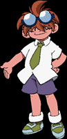

|
Tyson is the main character of Beyblade, and leader of the Bladebreakers. At the beginning of the series, Tyson is loud, overconfident, greedy, and does not really think out anything too well. At the end of the series, Tyson is loud, overconfident, greedy and doesn't really think anything out too well. While these qualities may seem bad, they are actually quite good. Through Tyson's stubbornness, you can see that Tyson has a heart of gold, and he is willing to do anything to make sure justice is served, whether in Beyblading or just life in general. That being said, Tyson can get a bit nosy sometimes. He often gets into fights with Kai, and he is often the loser. Nonetheless, Tyson's burning spirit is what makes him an admirable character. In Beyblade, Tyson's bit beast is Dragoon. Dragoon came to Tyson from his family sword. In battle, Tyson always decides to battle head on, with no plan whatsoever. It often takes a bit of encouragement from kenny or his teammates for Tyson to finally think of something else to do. Tyson's strategy doesn't really change throughout the series. |
 |
Max met Tyson in episode 3 "Take It To The Max!". Max was the one who taught Tyson how to take Beyblading seriously. Max is a very happy and enthuiastic kid. He always tries to make the team look on the good side of things when they're done. Max is probably the perfect definition of a best friend, as he has proven himself to his teammates more than once. His dad and mom live away from each other. Max stays in Japan with his dad, working at their Beyblade shop, while Max's mom works at a Beyblade Research Center, which Max discovers later in the series. When Max battles in Beyblade battles, he prefers to go on the defense side of things. Max prefers to absorb the attacks of hard hitting Beyblades, or he stalls around the Stadium until the other opponents' Beyblades run out of spin. |
 |
ray first meets Tyson in episode 6, "Dragoon Storm". ray at first appears to be a very overconfident jerk, much like Tyson. However, after the tournament ray joins the BBA, and he appears to be a nicer and quieter person. ray left China in order to become a better Beyblader, and by joining the BBA, he feel he can improve his skills. However, early in the series, his past in China seems to catch up with him… When ray beybattles, speed is the key. With his Driger bit beast, he uses the quick Tiger Claw Attack to decimate his opponents. ray can always be relied upon to try his best for the team. ray often tricks his opponents by ignoring their taunts and observes their battle techniques, and then he defeats them in the quickest way possible, ending their bragging statements. |
 |
Tyson meets Kai in episode 1. The two have their first Beybattle with each other, which ends in Tyson being the loser, because Kai is more experienced. Kai was the leader of a team called the Blade Sharks. However, after the tournament in Japan, Kai is made leader of the Blade Breakers. Kai tries to stay far away from a friendship with the others, and is often seen by himself. During the others' battles, if Kai feels that they are doing something completely ridiculous, he won't hesitate to tell them. He always offers advice to the others and leaves them to find it out on their own so it doesn't seem like he's helping them too much. Kai's family life is a bit of a shocking one, but I'll leave you to watch the series and find out more about that. When Kai battles, he always makes his battles quick and sweet. In fact, there's only very rare moments when Kai is actually in a long Beyblade battle. Kai overwhelms the opponent with such power that they cannot respond after he's done with them. Kai is basically the BBA' powerhouse and secret weapon. |
|  | kenny can not really be said to be a part of the team. He is a Beyblade expert, though. The funny thing is, he really isn't that good at Beyblading himself. On his computer is his bit beast, Dizzi. She got stuck in there as a result of kenny's fooling around one day. On his laptop, kenny has statistics of just about every Beyblade out there. He also records Beybattles on his laptop and watches them over to see the mistakes Tyson and the others make. He nags them to train a lot, and often feels that he is not given enough credit for what he does, but he keeps it to himself. Despite the nerdy look, kenny can be a true friend indeed. |
| The White Tigers are a beyblading team from China. Ray used to be the leader of the White Tiger's team until he left to become a better blader. The team now consists of the leader Lee, Mariah, Gary and Kevin. They are still angry at Ray for leaving the team and seek vengeance for what he did. |
| The All Starz are an american team which uses computer-enhanced beyblades. Max's mom is the team's manager and the whole team uses a sort of sports-themed launcher. The team consists of the leader Michael, as well as Eddy and Steve. Emily is also part of the team but like Kenny, collects data for research. |
| The Majestics aren't really an official team. They consist of the best beybladers in Europe and only act together because of the Bladebreaker's challenge. The team consists of the leader Robert, along with Oliver, Enrique and Johnny. The whole team is famous and are all rich. |
| The Demolition boys are a genetically engineered team consisting of the 'perfect' beybladers. They are very fond of playing dirty in battles and are very self-disciplined. The manager Boris, as well as the leader Voltaire aim to conquer the world with enhanced bit beasts. Thus, they are the bad guys of this show. The team consists of the leader Tala, with Ian, Spencer and Bryan. All of them use Cyborg bit beats with crushing attacks. |